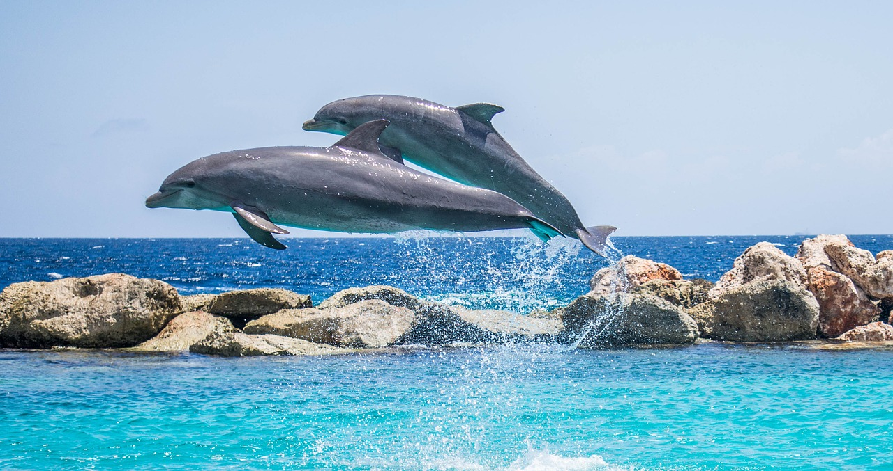
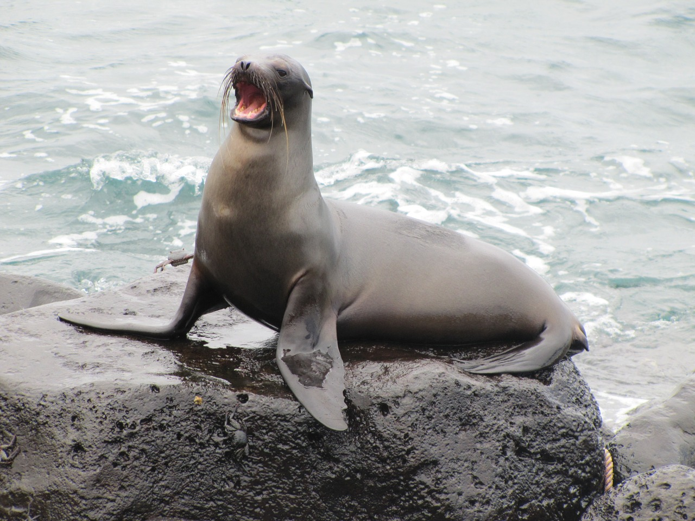
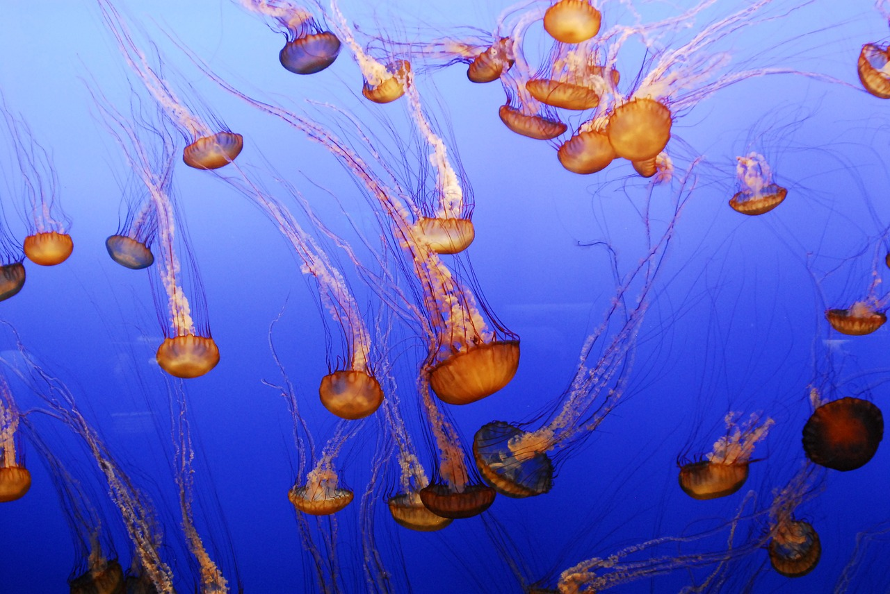
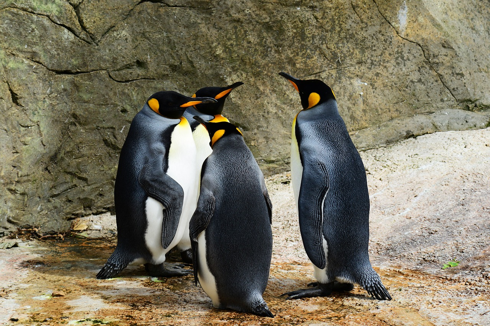
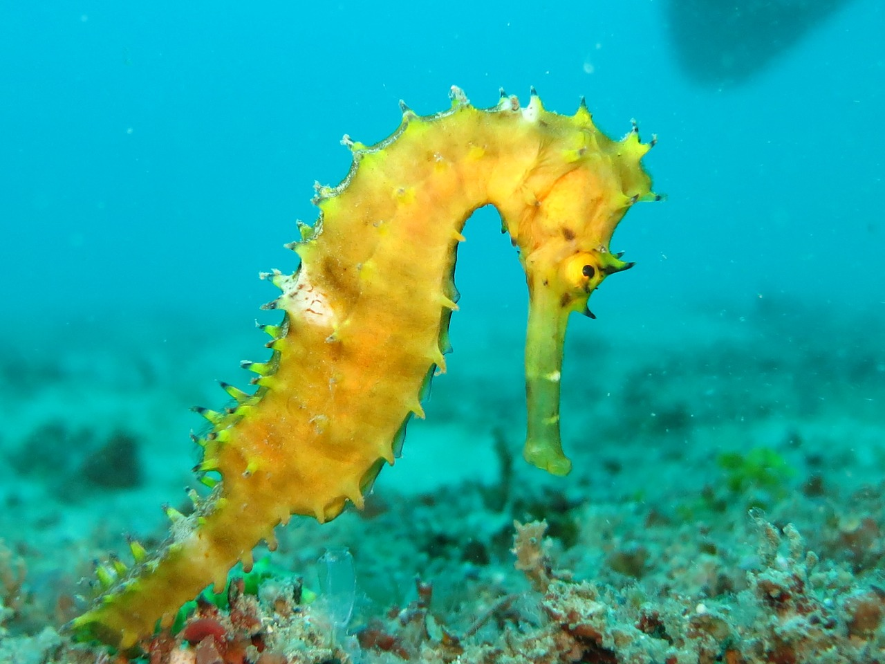
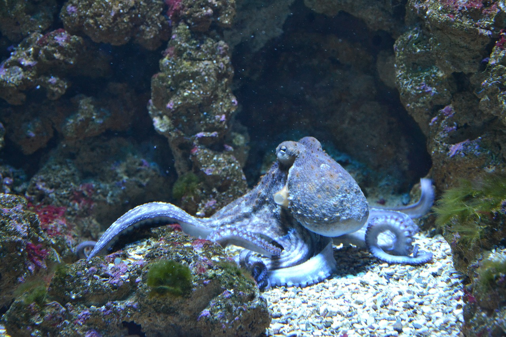

Welcome to the Seven Seas
Scientists estimate that about one million species of animals live in the ocean. But most of them—95 percent—are invertebrates, animals that don't have a backbone, such as jellyfish and shrimp. Here are a few of them.
 My Virtual Zoo
My Virtual Zoo Scientists estimate that about one million species of animals live in the ocean. But most of them—95 percent—are invertebrates, animals that don't have a backbone, such as jellyfish and shrimp. Here are a few of them.
 Dolphin is a common name of aquatic mammals within the infraorder Cetacea. The term dolphin usually refers to the extant families Delphinidae (the oceanic dolphins), Platanistidae (the Indian river dolphins), Iniidae (the New World river dolphins), and Pontoporiidae (the brackish dolphins), and the extinct Lipotidae (baiji or Chinese river dolphin). There are 40 extant species named as dolphins.
Dolphins range in size from the 1.7 m (5.6 ft) long and 50 kg (110 lb) Maui's dolphin to the 9.5 m (31 ft) and 10 t (11 short tons) killer whale. Several species exhibit sexual dimorphism, in that the males are larger than females. They have streamlined bodies and two limbs that are modified into flippers. Though not quite as flexible as seals, some dolphins can travel at 55.5 km/h (34.5 mph). Dolphins use their conical shaped teeth to capture fast moving prey. They have well-developed hearing which is adapted for both air and water and is so well developed that some can survive even if they are blind. Some species are well adapted for diving to great depths. They have a layer of fat, or blubber, under the skin to keep warm in the cold water.
For More Information, please visit: https://en.wikipedia.org/wiki/Dolphin
 Sea lions are pinnipeds characterized by external ear flaps, long foreflippers, the ability to walk on all fours, short, thick hair, and a big chest and belly. Together with the fur seals, they comprise the family Otariidae, eared seals, which contains six extant and one extinct species (the Japanese sea lion) in five genera. Their range extends from the subarctic to tropical waters of the global ocean in both the Northern and Southern Hemispheres, with the notable exception of the northern Atlantic Ocean.[1] They have an average lifespan of 20–30 years. A male California sea lion weighs on average about 300 kg (660 lb) and is about 2.4 m (8 ft) long, while the female sea lion weighs 100 kg (220 lb) and is 1.8 m (6 ft) long. The largest sea lion is Steller's sea lion, which can weigh 1,000 kg (2,200 lb) and grow to a length of 3.0 m (10 ft). Sea lions consume large quantities of food at a time and are known to eat about 5–8% of their body weight (about 6.8–15.9 kg (15–35 lb)) at a single feeding. Sea lions can move around 16 knots (30 km/h; 18 mph) in water and at their fastest they can reach a speed of about 30 knots (56 km/h; 35 mph).[2] Three species, the Australian sea lion, the Galápagos sea lion and the New Zealand sea lion, are listed as Endangered.[3][4][5]
For More Information, please visit: https://en.wikipedia.org/wiki/Sea_lion
 Jellyfish and sea jellies are the informal common names given to the medusa-phase of certain gelatinous members of the subphylum Medusozoa, a major part of the phylum Cnidaria. Jellyfish are mainly free-swimming marine animals with umbrella-shaped bells and trailing tentacles, although a few are not mobile, being anchored to the seabed by stalks. The bell can pulsate to provide propulsion and highly efficient locomotion. The tentacles are armed with stinging cells and may be used to capture prey and defend against predators. Jellyfish have a complex life cycle; the medusa is normally the sexual phase, the planula larva can disperse widely and is followed by a sedentary polyp phase.
For More Information, please visit: https://en.wikipedia.org/wiki/Jellyfish
 The king penguin (Aptenodytes patagonicus) is the second largest species of penguin, smaller, but somewhat similar in appearance to the emperor penguin. There are two subspecies: A. p. patagonicus and A. p. halli; patagonicus is found in the South Atlantic and halli in the South Indian Ocean (at the Kerguelen Islands, Crozet Island, Prince Edward Islands and Heard Island and McDonald Islands) and at Macquarie Island.[2] King penguins mainly eat lanternfish, squid and krill. On foraging trips king penguins repeatedly dive to over 100 metres (300 ft), and have been recorded at depths greater than 300 metres (1,000 ft).[3] King penguins breed on the subantarctic islands at the northern reaches of Antarctica, South Georgia, and other temperate islands of the region.
For More Information, please visit: https://en.wikipedia.org/wiki/King_penguin
 Seahorse (also written sea-horse and sea horse) is the name given to 45 species of small marine fish in the genus Hippocampus. "Hippocampus" comes from the Ancient Greek hippokampos (ἱππόκαμπος hippókampos), itself from hippos (ἵππος híppos) meaning "horse" and kampos (κάμπος kámpos) meaning "sea monster".[3][4] Having a head and neck suggestive of a horse, seahorses also feature segmented bony armour, an upright posture and a curled prehensile tail.[5]
For More Information, please visit: https://en.wikipedia.org/wiki/Seahorse
Sharks are a group of elasmobranch fish characterized by a cartilaginous skeleton, five to seven gill slits on the sides of the head, and pectoral fins that are not fused to the head. Modern sharks are classified within the clade Selachimorpha (or Selachii) and are the sister group to the rays. However, the term "shark" has also been used for extinct members of the subclass Elasmobranchii outside the Selachimorpha, such as Cladoselache and Xenacanthus, as well as other Chondrichthyes such as the holocephalid eugenedontidans.
Under this broader definition, the earliest known sharks date back to more than 420 million years ago.[2] Acanthodians are often referred to as "spiny sharks"; though they are not part of Chondrichthyes proper, they are a paraphyletic assemblage leading to cartilaginous fish as a whole. Since then, sharks have diversified into over 500 species. They range in size from the small dwarf lanternshark (Etmopterus perryi), a deep sea species of only 17 centimetres (6.7 in) in length, to the whale shark (Rhincodon typus), the largest fish in the world, which reaches approximately 12 metres (40 ft) in length.[3] Sharks are found in all seas and are common to depths of 2,000 metres (6,600 ft). They generally do not live in freshwater although there are a few known exceptions, such as the bull shark and the river shark, which can be found in both seawater and freshwater.[4] Sharks have a covering of dermal denticles that protects their skin from damage and parasites in addition to improving their fluid dynamics. They have numerous sets of replaceable teeth.[5] Well-known species such as the tiger shark, blue shark, great white shark, mako shark, thresher shark, and hammerhead shark are apex predators—organisms at the top of their underwater food chain. Many shark populations are threatened by human activities.
For More Information, please visit: https://en.wikipedia.org/wiki/Sharkch
 The octopus (plural octopuses) is a soft-bodied, eight-limbed mollusc of the order Octopoda (/ɒkˈtɒpədə/, ok-TO-pə-də). Around 300 species are recognised, and the order is grouped within the class Cephalopoda with squids, cuttlefish, and nautiloids. Like other cephalopods, the octopus is bilaterally symmetric with two eyes and a beak, with its mouth at the center point of the eight limbs ("tentacle" is used as an umbrella term for cephalopod limbs; however, within a teuthological context, "arm" is used to refer to such limbs while "tentacle" is reserved for feeding appendages not found on octopuses). The soft body can rapidly alter its shape, enabling octopuses to squeeze through small gaps. They trail their eight appendages behind them as they swim. The siphon is used both for respiration and for locomotion, by expelling a jet of water. Octopuses have a complex nervous system and excellent sight, and are among the most intelligent and behaviourally diverse of all invertebrates.
For More Information, please visit: https://en.wikipedia.org/wiki/Octopus